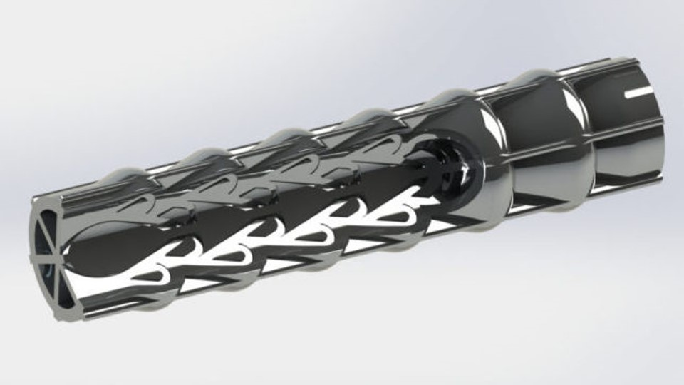

Godina: 1920.
Teslin ventil, kojeg Tesla naziva valvularni vod, je pasivni nepovratni ventil fiksne geometrije. Omogućuje fluidu da teče poželjno u jednom smjeru, bez pokretnih dijelova. Uređaj je dobio ime po Nikoli Tesli, koji je 1920. godine za svoj izum dobio patent. Unutrašnjost cijevi je osigurana proširenjima, udubljenjima, ispupčenjima i pregradama koje, iako ne pružaju gotovo nikakav otpor prolazu tekućine u jednom smjeru, osim površinskog trenja, predstavljaju gotovo neprohodnu prepreku njegovom protoku u suprotan smjer. Bez pokretnih dijelova, Teslini ventili su mnogo otporniji na trošenje i umor, posebno u primjenama s čestim preokretom tlaka, kao što je impulsni mlaz.